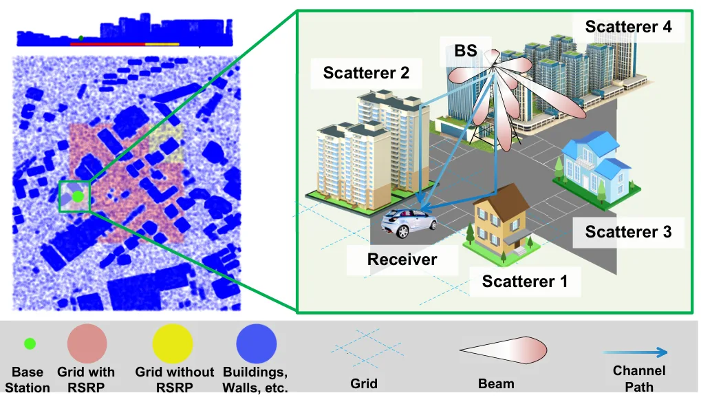
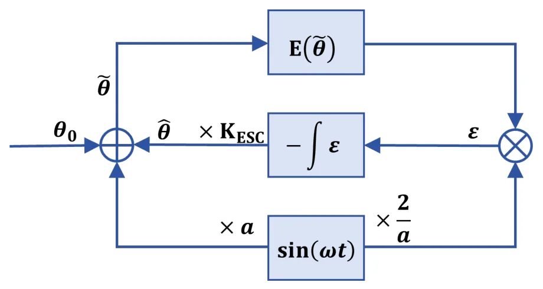
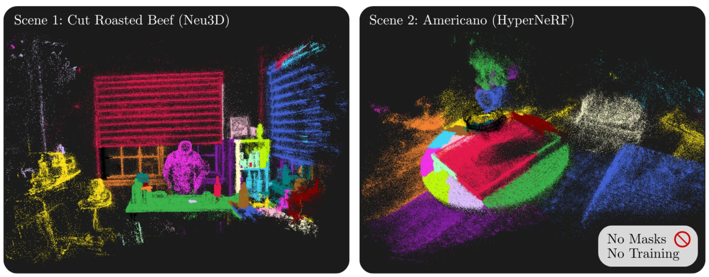
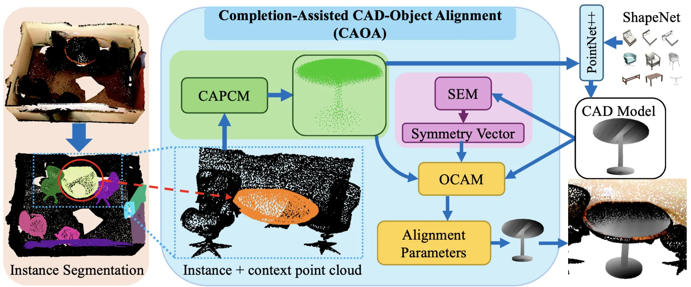
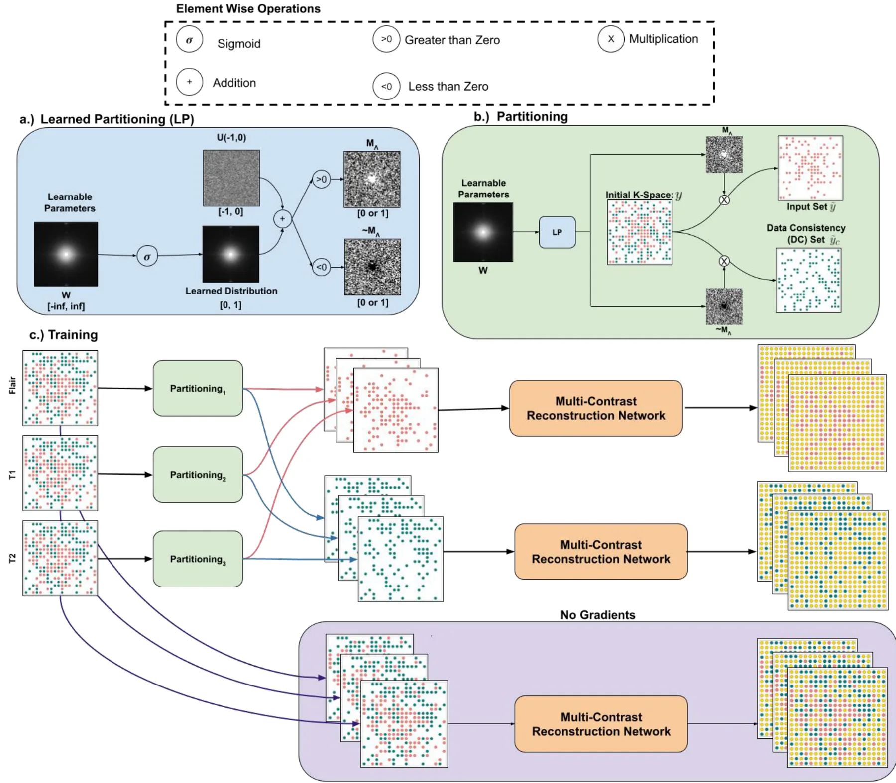
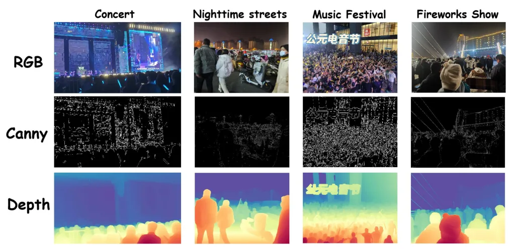
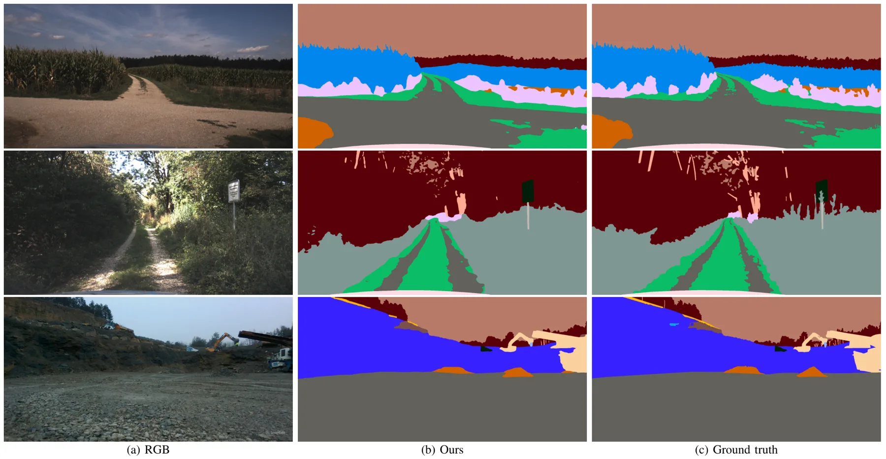
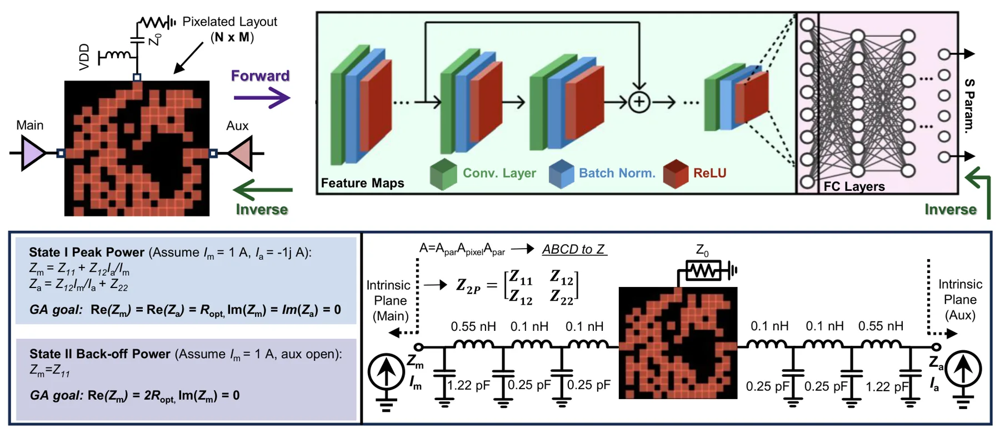
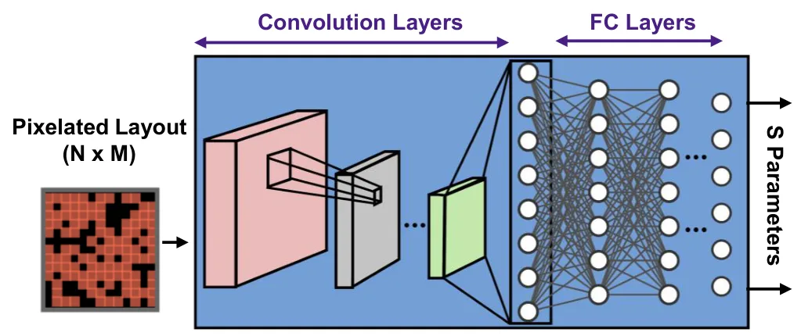
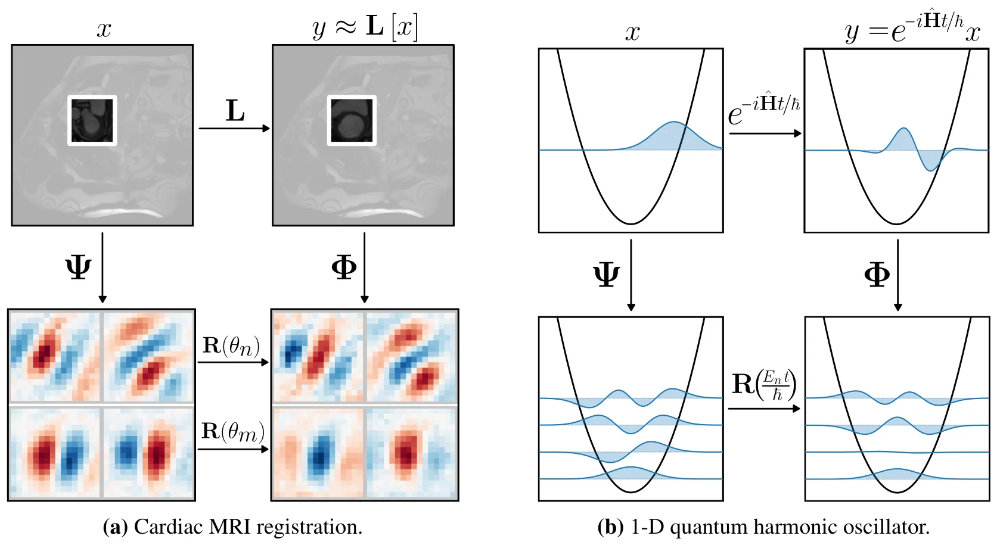

新论文 · 日期 2026-06-18 · score 12 · eess.SP, cs.LG
作者：Ye Xue, Yiheng Wang, Xinhua Shao, Qi Yan, Shutao Zhang, Tsung-Hui Chang
评分 7.4/10
点云3D Gaussian Splatting无线数字孪生多路径几何辅助信道预测
一句话工作总结：PC-TGS 用 LiDAR 点云初始化/优化 3D Gaussians，并把它们投影到局部角域，用于外推未测位置的无线多路径角功率谱。
面向下一代无线网络优化，站点相关的精确信道信息非常关键。已有 localized statistical channel modeling（LSCM）可由参考信号接收功率（RSRP）测量建模多路径角功率谱（APS），但难以在缺少测量的大量位置外推 APS。本文提出 PC-TGS，把稀疏无线测量与密集 LiDAR 几何结合，用各向异性 3D Gaussians 表达环境散射体，并通过对原始点云的 relaxed-me…
Accurate, site-specific channel information is crucial for optimizing next-generation wireless networks. Among various approaches, localized statistical channel modeling (LSCM), which models the channel multip…

新论文 · 日期 2026-06-18 · score 10 · eess.IV, physics.med-ph
作者：Jipeng Yan, Chang Liu, Hengchang Liu, Biao Huang, Meng-Xing Tang, Yingxiang Liu, Ying Tan
评分 4.2/10
图像配准Extremum Seeking Control运动校正医学成像非刚性配准
一句话工作总结：该工作用 ESC 从跨迭代相似度扰动中估计下降方向，降低医学图像配准中显式梯度计算成本。
超声定位显微成像（ULM）需要通过图像配准进行组织运动校正。常见参数化配准会迭代更新运动参数以最大化图像相似度，优化过程通常依赖梯度，而显式计算相似度对运动参数的梯度可能很耗时。本文研究用 Extremum Seeking Control（ESC）替代显式导数评估：通过对扰动和解调后的相似度指标进行跨迭代积分来获得下降信息。作者先在由离体猪心跳动数据构造的仿真真值 affine 配准中比较 ESC 与梯度下降，结果…
Tissue motion correction through image registration is essential for ultrasound localization microscopy (ULM). Parametric image registration is commonly formulated as an optimization problem where motion param…

新论文 · 日期 2026-06-18 · score 9 · cs.CV, eess.IV
作者：Hasan Yazar, Mohamed Rayan Barhdadi, Erchin Serpedin, Mehmet Tuncel, Hasan Kurban
评分 8.1/10
4D Gaussian Splatting动态场景分割无监督分割Leiden 聚类3DGS-SLAM
一句话工作总结：Intrinsic-GS 直接利用 4D Gaussian primitives 的外观、几何、形变轨迹和渲染边界建立图并聚类，实现无需外部 mask 的动态场景分割。
动态 4D Gaussian Splatting 能高保真重建形变场景，并越来越常作为动态三维场景表示。要对这些场景进行编辑、操作或运动分析，首先需要把 Gaussian primitives 分组成一致对象。现有流程常从 SAM 等基础模型生成 2D mask，再提升或蒸馏到 Gaussian 表示中，但动态场景下需要跨多帧多视角生成 mask，成本高且结果依赖外部 mask 质量。本文提出 Intrinsic-…
Dynamic 4D Gaussian Splatting reconstructs deforming scenes with high fidelity and is increasingly adopted as a representation for dynamic 3D scenes. Putting such a scene to use, for editing, manipulation or m…

新论文 · 日期 2026-06-18 · score 7 · cs.CV, cs.AI, cs.LG
作者：Hiranya Garbha Kumar, Minhas Kamal, Balakrishnan Prabhakaran
评分 7.8/10
对象级三维重建CAD 对齐点云补全RGB-DScan2CAD
一句话工作总结：CAOA 先补全真实 RGB-D 扫描物体点云，再用对称性感知位姿估计完成 CAD 9DoF 对齐，面向对象级三维语义重建。
在室内 RGB-D 扫描中把 CAD 模型精确对齐到对应物体，是三维语义重建的重要挑战。该任务需要估计包含位置、旋转和三轴尺度在内的 9DoF 位姿，但真实扫描的噪声、不完整性和分割误差会导致几何畸变。CAOA 将一个语义与上下文感知的点云补全模块和一个对称性感知相对位姿估计算法结合，用补全缓解缺失扫描造成的形状偏差，再用 symmetry-aware loss 处理对称物体的姿态歧义。作者还提出面向室内场景的合成…
Accurately aligning CAD models to their corresponding objects in indoor RGB-D scans is a central challenge in 3D semantic reconstruction. The task requires estimating a 9-Degree-of-Freedom (DoF) pose-position,…

新论文 · 日期 2026-06-18 · score 7 · eess.IV
作者：Brenden Kadota, Charles Millard, Mark Chiew
评分 3.2/10
MRI 重建自监督学习k-space多对比度外围参考
一句话工作总结：该 MRI 工作把多对比度自监督重建与可学习 k-space 数据划分结合，以在无全采样参考时提升图像重建质量。
深度学习已用于从欠采样数据重建高质量 MRI 图像。已有多对比度方法可利用不同 contrast 之间的信息，但常依赖 fully sampled k-space 监督；SSDU 则通过把欠采样 k-space 划分为两部分，使网络在欠采样数据上自监督训练。本文提出多对比度自监督学习框架，在无需 fully sampled k-space 参考的情况下联合训练多个欠采样 contrasts，并端到端学习每个 con…
Objective: Deep Learning has shown promise in accelerating MRI by reconstructing high-quality images from under-sampled data. While recent work has leveraged multi-contrast information to improve reconstructio…

新论文 · 日期 2026-06-18 · score 6 · cs.CV, cs.AI, cs.GR
作者：Hao-Yuan Ma, Li Zhang, Yushi Qiu, Jie Gao, Yan Zhang, Bangjun Wang
评分 4.6/10
低光视觉多模态融合DepthEdge密集预测
一句话工作总结：该方法用 RGB、depth 和 edge 构建多模态超图，并用稀疏注意力提升低光密集预测，对夜间感知有间接启发。
低光环境下的人群计数具有实际意义但研究不足。现有方法多聚焦光照充足场景，或仅依赖 RGB 表示，而在极暗与非均匀照明下 RGB 往往不可靠。本文构建了三个低光人群计数基准：两个合成数据集 SHA_Dark、SHB_Dark 和一个真实 LC-Crowd。受 Retinex 物理建模启发，方法引入深度和 Canny 边缘作为几何与结构先验，增强低光下的内在反射表示；提出 Multi-Modal Hyper-Graph…
Crowd counting is a fundamental task in computer vision. However, crowd counting in low-light environments remains largely underexplored, despite its practical importance in the real world. Existing methods ma…

新论文 · 日期 2026-06-18 · score 6 · cs.CV, cs.RO, eess.IV
作者：Jaeil Park, Hyobin Choi, Sangjin Lee, Hyungtae Lim, Sung-Hoon Yoon
评分 6.7/10
Field Robotics语义分割DINOv3Mask2Former越野场景理解
一句话工作总结：该技术报告用 DINOv3 + ViT-Adapter + Mask2Former 和 TTA/ensemble 获得 GOOSE 野外机器人语义分割挑战第一名。
GOOSE 2D Fine-Grained Semantic Segmentation Challenge 是 ICRA 2026 Field Robotics Workshop 上的越野图像稠密语义分割挑战，使用 64 个细粒度类别和 11 个非 void 粗类别进行评测。本文给出第一名方案：网络层面结合自监督 DINOv3 ViT-L/16 backbone、ViT-Adapter 和 Mask2Former…
The GOOSE 2D Fine-Grained Semantic Segmentation Challenge at the ICRA 2026 Workshop on Field Robotics evaluates dense semantic segmentation of off-road imagery over a fine-grained taxonomy of 64 classes and 11…

新论文 · 日期 2026-06-18 · score 6 · eess.SP, cs.AI, cs.AR, cs.SY
作者：Han Zhou, Haojie Chang, David Widen, Christian Fager
评分 1.8/10
RF 硬件Doherty 功放逆向设计CNN低相关
一句话工作总结：该工作用 CNN、像素化布局和遗传算法自动设计 Doherty 功放输出合成器，属于 RF 硬件逆向设计。
Doherty 功率放大器的输出合成器在单一网络中整合负载调制、阻抗匹配和相位补偿，因此设计和综合较困难。本文提出三端 Doherty combiner 设计方法，把深度卷积神经网络、像素化布局表示和 genetic algorithms 与双状态阻抗综合结合，同时处理峰值功率与 back-off 功率条件。作为概念验证，作者设计并制造了两个 GaN HEMT Doherty PA 原型，二者在 2.6-2.8 G…
The output combiner of a Doherty power amplifier (PA) integrates load modulation, impedance matching, and phase compensation within a single network, making its design and synthesis highly challenging. In this…

新论文 · 日期 2026-06-18 · score 6 · eess.SP, cs.AI, cs.AR, cs.SY
作者：Han Zhou, Richard Bannister, Caspar Pierce, Haojie Chang, David Widen, Ludvig Fornstedt, Gabriel Melin, Alexander Bohlin, Pontus Lindeberg Fredriksson, Dilbagh Singh, Christian Fager, Koen Buisman
评分 1.7/10
微波滤波器RF 设计CNN遗传算法低相关
一句话工作总结：该工作用 CNN 与遗传算法自动综合像素化微波滤波器，并通过 S 参数和电光电场测量验证设计。
传统微波滤波器设计通常依赖迭代参数调节和预定义拓扑，限制设计空间并增加开发时间。本文使用结合卷积神经网络和 genetic algorithms 的深度学习方法，自动综合像素化微波滤波器。为实验验证该方法，作者分析了 S 参数和空间电场测量；综合得到的低通滤波器在仿真与测量之间吻合良好，实现 7 GHz 通带并在 9.5 GHz 之后有超过 20 dB 抑制。首次使用电光测量揭示了类似耦合传输线或 stub 结构的…
Traditional microwave filter design typically relies on iterative parameter tuning and predefined topologies, which limits design space and increases development time. This study uses a deep learning approach…

新论文 · 日期 2026-06-18 · score 5 · cs.CV, cs.AI
作者：Cole Reynolds
评分 5.9/10
图像配准Phase Correlation稠密对应非刚性形变视觉前端
一句话工作总结：Neural Phase Correlation 学习用于分解变换的 basis，把图像间关系显式建模为一等对象，可用于非刚性配准和一般对应估计。
对应关系本质上是关系式的：它寻找两个共同场景观测之间未知的变换，而不是任一观测本身的内容。主流学习方法常分别编码每幅图像，再让相似度函数或深度解码器隐式发现映射；传统 phase correlation 则直接在 Fourier 域测量图像间关系，但固定基限制其主要适用于全局平移。本文提出 phase correlation 的学习式泛化，通过学习变换分解所依赖的 basis，突破固定 Fourier basis…
Correspondence is fundamentally relational: it seeks the unknown transformation between two observations of a common scene, not the content of either. Yet the dominant learning-based methods do not represent t…